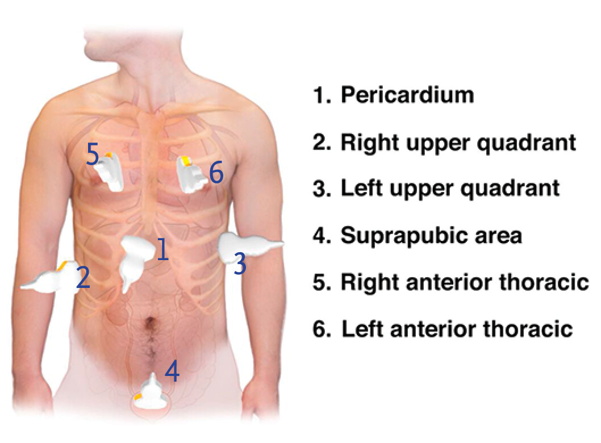
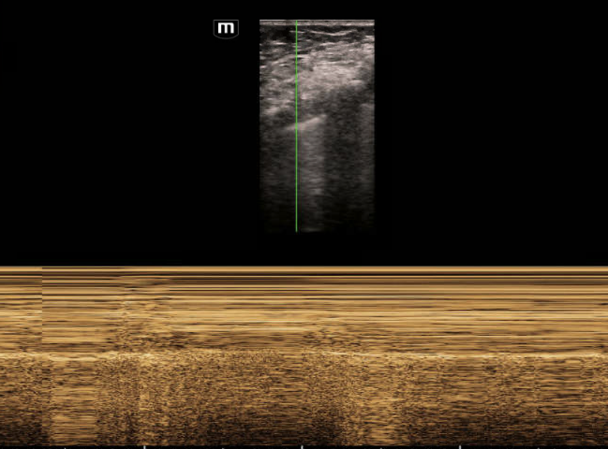
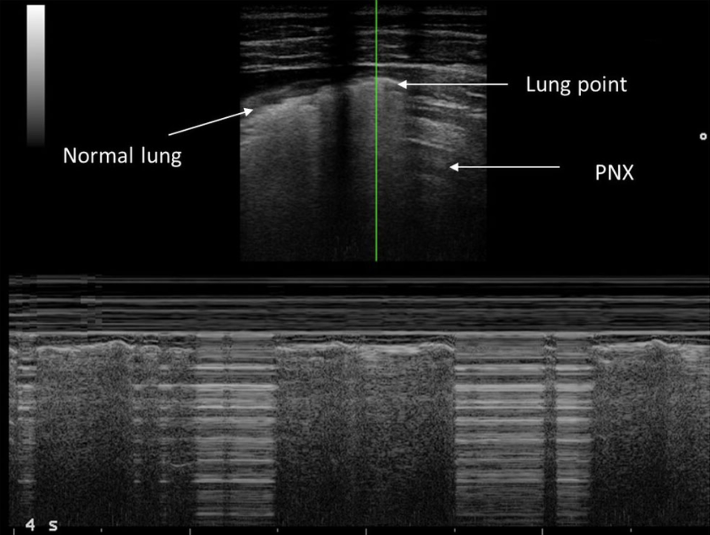

Anterior chest
Supine. Linear probe, marker cephalad. Scan several anterior interspaces on both sides, starting near the midclavicular line.
Add the chest. Find the pleural line. Watch it move. Then look above both diaphragms for fluid.
Supplement to the FAST guide · Alexander Belaia, MD · e-FAST lecture, August 24, 2026
Focused on slides 20 and 27–32 · About 10 minutes

Supine. Linear probe, marker cephalad. Scan several anterior interspaces on both sides, starting near the midclavicular line.
Find two ribs and their shadows. Pleura lies just deep to them. Keep the image shallow and probe still.
Curvilinear or phased array. Sweep both posterolateral bases. Identify the diaphragm through the liver and spleen.
Technique: ACEP Sonoguide. The slide label “bilateral lung apices” does not replace a sweep of the anterior chest in a supine patient.
Video could not load. Use the Open video link or reload this page.
Point to the pleural line before pressing play.
Is there fine movement along that line with respiration? Or is the whole image moving together?
Look for local shimmering at the pleural interface. True lung sliding indicates pleural apposition and excludes pneumothorax at that sampled site.
A single reassuring interspace cannot clear an entire hemithorax.
Video could not load. Use the Open video link or reload this page.
Watch several respiratory cycles. Compare with clip A.
If you cannot confidently see sliding, what do you check next?
Confirm the correct interface and image quality. Check ventilation. Look for a true B-line or lung pulse. A B-line begins at pleura, reaches the bottom of the image, and erases A-lines. Repeat at another interspace.
Absent or uncertain sliding alone does not diagnose pneumothorax.
Video could not load. Use the Open video link or reload this page.
Describe what moves before naming a sign.
A lung point is a respiratory transition between a sliding lung pattern and an adjacent non-sliding pattern.
Both patterns belong to the same pleural interface. The boundary comes and goes with breathing. Exclude normal lung edges near the heart or diaphragm, and mimics such as bullae.
These three lecture loops are observation exercises, not independently adjudicated patient diagnoses. See the annotated lung-point example next.


Barcode means no detected motion at the cursor. It does not establish the cause. Interpret M-mode with B-mode and the patient.
Lung point: Lichtenstein et al. · Reported mimics and variants.
Video could not load. Use the Open video link or reload this page.
The spine remains visible above the diaphragm when fluid provides an acoustic window.
Mobile atelectatic lung within the collection produces the “jellyfish” appearance.
Pleural fluid. In trauma, consider hemothorax. Sonographic appearance alone cannot prove the fluid is blood. Blood can contain internal echoes or clot.
Sweep both bases. Keep abdominal and pleural compartments separate.
| Finding | Interpretation |
|---|---|
| Sliding, true B-line, or lung pulse | Pleural apposition at the examined site. A lung pulse follows the heartbeat and can occur without ventilation. |
| No sliding | Consider pneumothorax, apnea, mainstem intubation, pleural adhesions, or diseased lung. Reassess the image and clinical context. |
| Convincing lung point | Strong support for pneumothorax. A point may be absent with a large pneumothorax. Failure to find one does not exclude it. |
| Inadequate window | Indeterminate. Subcutaneous air, dressings, and poor penetration can prevent assessment. |
Suspected tension pneumothorax with hemodynamic instability or severe respiratory compromise requires immediate decompression. Do not delay treatment to find a lung point or obtain imaging.
INDICATION: [trauma / respiratory compromise / other] EXAM: Focused thoracic ultrasound, eFAST extension SITES: [right anterior sites; left anterior sites; right and left bases] QUALITY / LIMITATIONS: [describe each limited window] RIGHT PLEURA: [sliding / B-lines / lung pulse / absent motion / indeterminate] LEFT PLEURA: [sliding / B-lines / lung pulse / absent motion / indeterminate] LUNG POINT: [seen at site / not identified / not assessed] RIGHT PLEURAL FLUID: [present / absent / indeterminate] LEFT PLEURAL FLUID: [present / absent / indeterminate] INTERPRETATION: [findings and their site-specific limitations] INTEGRATION / ACTION: [physiology, team communication, next step] IMAGES: [representative cine clips archived / reason unavailable]
This is a draft for your own SmartPhrase library. Complete every field from the examination. The FAST core requires its own findings.
Media extracted from the supplied lecture. The chest-window illustration retains its NEJM attribution. Added interpretation prompts and cases are educational synthesis. Clinical application requires supervised training and local trauma protocols.